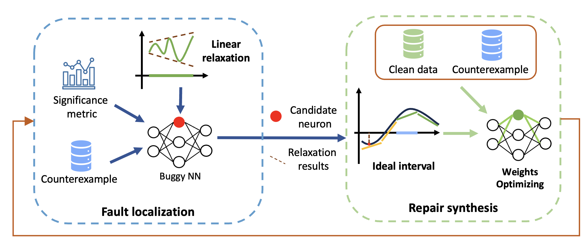

Neural network repair aims to fix the bugs of neural networks by modifying the model's architecture or parameters. However, due to the data-driven nature of neural networks, it is difficult to explain the relationship between the internal neurons and erroneous behaviors, making further repair challenging. While several work exists to identify responsible neurons based on gradient or causality analysis, their effectiveness heavily rely on the quality of available bugged data and multiple heuristics in layer or neuron selection.
In this work, we address the issue utilizing the power of formal verification (in particular for neural networks). Specifically, we propose VeRe, a verification-guided neural network repair framework that performs fault localization based on linear relaxation to symbolically calculate the repair significance of neurons and furthermore optimize the parameters of problematic neurons to repair erroneous behaviors. We evaluated VeRe on various repair tasks, and our experimental results show that VeRe can efficiently and effectively repair all neural networks without degrading the model's performance. For the task of removing backdoors, VeRe successfully reduces attack success rate from 98.47% to 0.38% on average, while causing an average performance drop of 0.9%. For the task of repairing safety properties, VeRe successfully repairs all the 36 tasks and achieves 99.87% generalization on average.

[ICSE 2024] VeRe: Verification Guided Synthesis for Repairing Deep Neural Networks
Jianan Ma, Pengfei Yang, Jingyi Wang, Youcheng Sun, Cheng-Chao Huang and Zhen Wang
[Paper] [Slides] [Docker image]